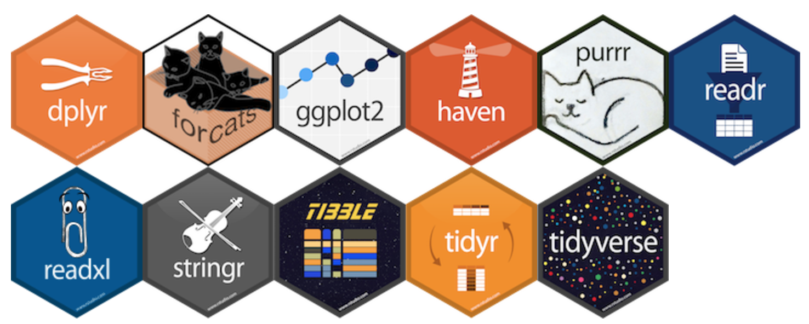

Conducting Empirical Research in Economics
2022-06-05
Chapter 1 Data Analysis and Visualization using R
knitr::include_graphics(here::here("image", "trans.png"))
Figure 1.1: Data anaylsis piepleine
1.1 Introduction to R and R Studio
knitr::include_graphics(here::here("image", "appstore.png"))
Figure 1.2: R vs R Studio
1.2 Data transformation
1.2.1 The tidyverse
The tidyverse is a collection of R packages that share common philosophies and are designed to work together.
knitr::include_graphics(here::here("image", "tidyverse.png"))

Figure 1.3: tidyverse packages
1.2.1.2 The pipe %>%
- A way to chain together commands
- Can be read as “and then” when reading over code
knitr::include_graphics(here::here("image", "pipe.jpg"))
Figure 1.4: The Pipe Operator

1.2.1.4 dplyr
The Six Main Verbs (6MV) of data wrangling
1.2.1.4.1 filter()
- Select a subset of the rows of a data frame.
- Arguments are “filters” that you’d like to apply.
- Use
==to compare a variable to a value. - Use
|to check for any in multiple filters being true. - Use
,to check for all of multiple filters being true. - Use
%in%to check for any being true (shortcut to using|repeatedly with==)
1.2.1.4.2 select()
- select variables (columns within a dataframe).
:a range of consecutive variables. -starts_with(): variables Starts with a prefix. -ends_with(): variables ends with a suffix. -contains(): Contains a literal string.
1.2.1.4.3 summarize()
- Any numerical summary that you want to apply to a column of a data frame is specified within
summarize().
1.2.1.4.4 Combining summarize() with group_by()
When you’d like to determine a numerical summary for all levels of a different categorical variable